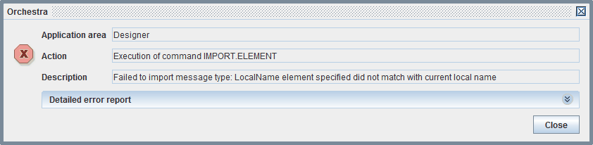
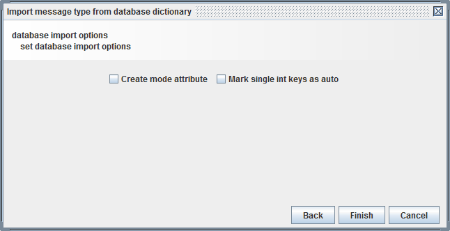
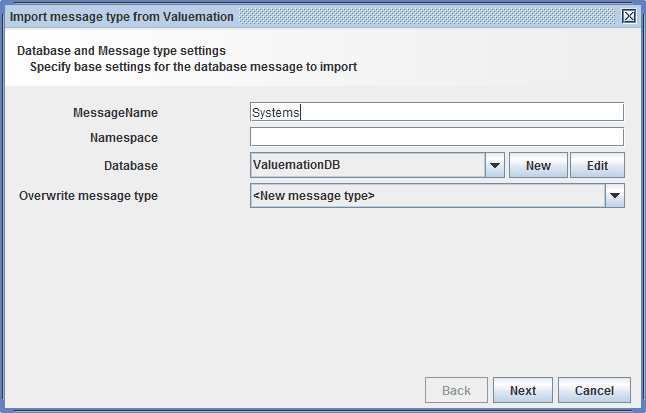
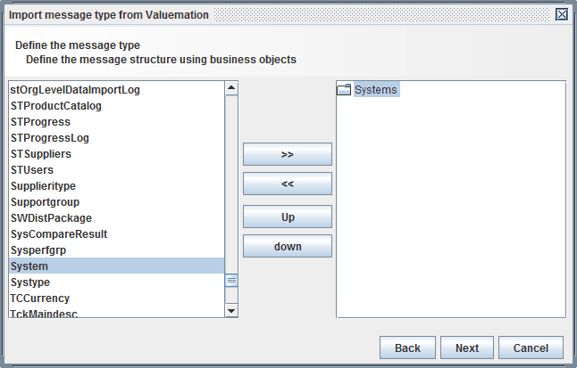
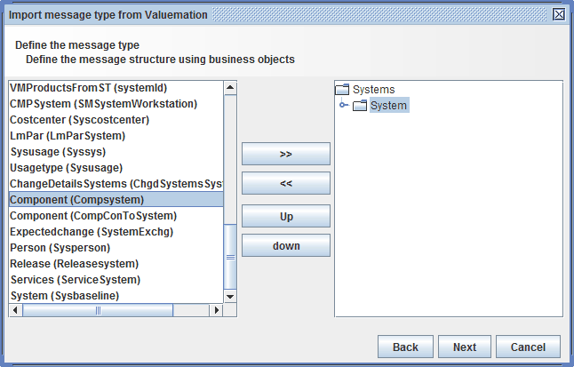
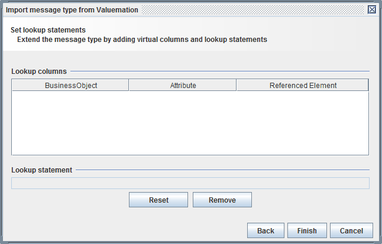

Creation

Topic content
There are several ways to create a new message type in the Designer
•Create message types manually
•Create message type from an XML schema element
•Import message type from exported XSD
•Import message type from database tables
•Import message type from Valuemation
•Import message type from a CSV file
•Import IDOC message type from SAP
•Import RFC message type from SAP
In most cases a message type is created by selecting the group message types in the tree of scenario elements, clicking the right mouse button and selecting the entry Create message type or one of the Import options.
select pop menu item
Create a message type manually
A message type is created manually by selecting the group message types in the tree of scenario elements, clicking the right mouse button and selecting the item Create message type.
Then the dialog Create new message type pops up.
1.First you enter an appropriate name for the new channel and optionally a short description.
Assign name and description
2.After clicking the button the message type is created and the panel to configure the message type is opened.
Create a message type from an XML schema element
Sometimes, especially in the context of Web services, the user has already imported XML schemas into an Orchestra scenario. In this case it is common to create a message type from an element or a type described within an XML schema.
1.First select an XML schema in the group XML schemas. Click the right mouse button and select Expand to message type in the popup menu.
2.In the following dialog you can select an entry from either the list of elements or the list of types defined in the XML schema. The selected element or type will later serve as the root element of the generated message type.
select an element or type defined in the schema
3.After click on Next a dialog opens where you may choose to create a new message type or replace an existing one. In case of a new message type you also can change the name of the new message type. By default the name of the root element is chosen.
choose message type to replace or enter name of new message type
4.After clicking the button the message type is created and the panel to configure the message type is opened.
|
Note that message type exanded from a Schema are not modifiable! |
This is because the tree structure of the message is defined by dynamically creating it from the information contained in the XML schema.
A message type expanded from an XML schema can be changed to be editable. To do this the user has to select the message type, click the right mouse button and select in the popup menu. If the message type editor is open then you might need to reopen it if you want to change it.
|
Note that the message type is disconnected from the original XML schema if it was changed to be editable! |
Import a message type from an exported XSD
If a message type has been exported into an xsd file, in may be imported from this file in any other scenario. To do this select the group message types in the tree of scenario elements, click the right mouse button and select the item Import from xsd.
Then a dialog to select a xsd file pops up.
Now select the appropriate file and click the button. The message type is created and the panel to configure the message type is opened.
|
Note that you may select any XML schema here. But if the schema doesn't represent a message type, that is, if it was not exported from Orchestra an error message will occur: |

Import a message type from database tables
The user may import a message type from a database. The message type then will resemble the columns of the database table and also its logical structure expressed through foreign key relationships. It also will contain information about the primary and unique keys defined for the selected tables. Actually you normally import a message type from a database only to use it when working with the Database Target channel or with the Database Source Reader channel.
Step by step
To select a message from a database first select the group message types in the tree of scenario elements, click the right mouse button and select the item Import from database.
1.Then a dialog to select a database connection pops up.
DB import Wizard Page 1: select DB connection
If no Database connection was created so far you can click on the button to create one. To change or test a database connection select it and then click the button . The user must enter a name for the new message type here. He also may enter a namespace for the new message type. It actually will be the target namespace of the XML schema created to store the information for that message type. You also may decide here if to create a new message type or if you want to overwrite the structure of an existing message type.
2.After click on the Next button a dialog appears where you can select a table from the database.
build the message type by selecting tables from the database dictionary
Click on the symbol with the two right arrows to add the selected table as root element to the message type. Then you will see all depended tables. In our case the table INV_DETAIL is shown.
Add a dependent table while importing tables from a database
If you select a child table and then again click on the right arrow the selected child table will be added as child element to the message. If there exists no explicit foreign key on the database but you want to express a logical relationship between records of two tables you may select the check button and you will see not only the tables referencing the selected table through a foreign key but all tables.
3.If you have finished your work click on the button. A dialog appears where you may select additional import options.

The option is obsolete. It exists only for compatibility reasons.
The option adds a certain annotation to key attributes of type int in the generated message type. This information is later used in the Database Target channel to automatically create an invocation of the function newKey for that attribute. Actually this is not very important here, because you always can add such a function call manually in the Database Target channel.
If you finally click on the button the message type will be created.
Message imported from a database
The created message type will contain additional information (like columnname) which is used from the Database Target channel and from the Database Source Reader.
Import a message type from Valuemation
The user may import a message type from Valuemation. The message type then will resemble the attributes of the Valuemation Business object and also its relationship to other Business objects. It also will contain information about the database tables and columns where these Business objects and its attributes are stored. Actually you normally import a message type from a database only to use it when working with the Database Target channel or with the Database Source Reader channel.
Step by step
To select a message from Valuemation first select the group message types in the tree of scenario elements, click the right mouse button and select the item Import from valuemation.
1.Then a dialog to select the connection to your Valuemation database pops up.

If no Database connection was created so far you can click on the button New to create one. To change or test a database connection select it and then click the button Edit. The user must enter a name for the new message type here. He also may enter a namespace for the new message type. It actually will be the target namespace of the XML schema created to store the information for that message type. You also may decide here whether to create a new message type or if you want to overwrite the structure of an existing message type.
2.After click on the Next button a dialog appears where you can select a Business object from the Valuemation repository.

Click on the symbol with the two right arrows to add the selected Business object as root element to the message type. Then you will see all depended objects.

If you select a child object and then again click on the right arrow >> the selected Business object will be added as child element to the message.
3.If you have finished your work click on the button. A dialog appears where you may select additional import options.

If you finally click on the Finish button the message type will be created.
The created message type will contain additional information which is used from the Database Target channel or from the Database Source Reader.
Import a message type from a CSV file
The user may import a message type from the head line of an existing CSV file. To do this select the group message types in the tree of scenario elements, click the right mouse button and select the item Import from csv.
Then a dialog to select a csv file pops up.
1.First select the CSV file containing an appropriate head line. Enter the next button.
2.In the next dialog you may change the separator characters of the file and parse its first lines. You also may change the Name of the created message type.
set properties of the CSV file to parse head line
3.After clicking the button the message type is created and the panel to configure the message type is opened.
Import a message type from OTD
The user may import a message type from an eGate Object type definition. The default format is internal, so the fields of the overrride delimiters and escape sequences will be filled automatically.
Import an IDOC message type from SAP
The user may import a message type representing the structure of an IDOC (Intermediate Document) directly from a SAP server. These message types are typically used in mappings to create messages resembling the IDOC structure which SAP expects or to extract the necessary data from an IDOC received from SAP by the SAP RFC Receiver.
Import a RFC message type from SAP
The user may import a message type representing the structure of an RFC (Remote Function call) directly from a SAP server. These Message types are typically used in mappings to create messages representing a Remote function call. The created messages are then sent to a SAP RFC Caller to invoke the remote function.